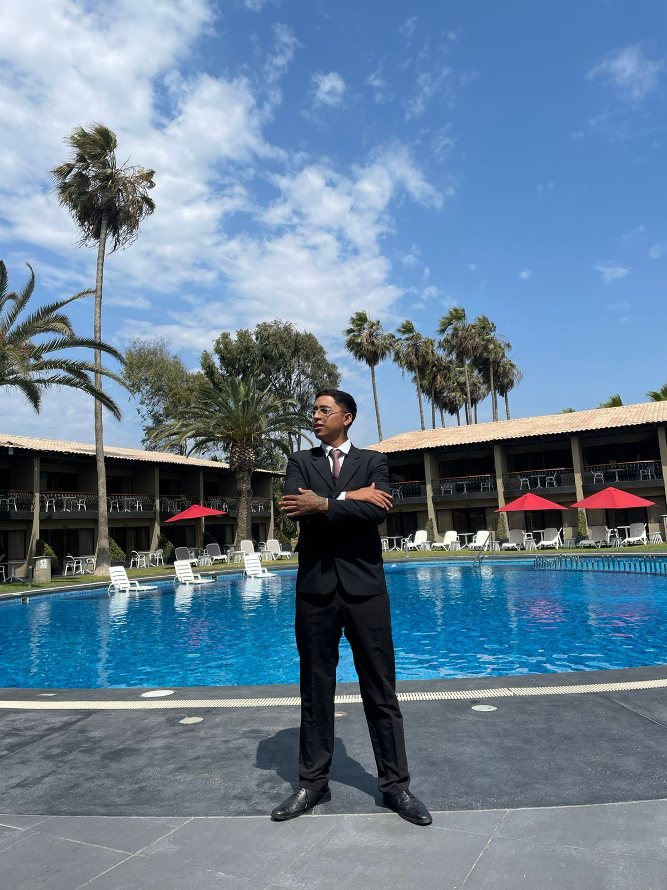
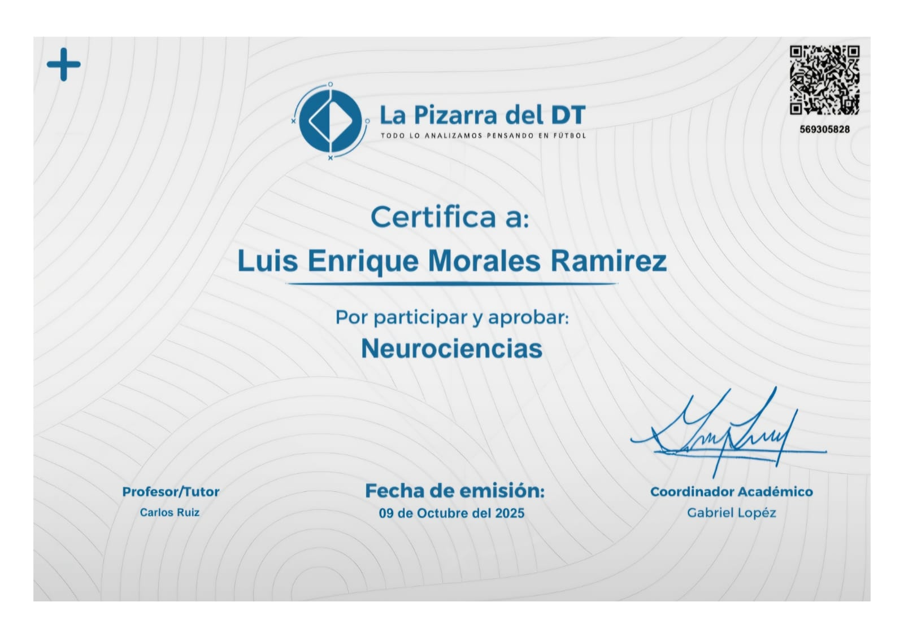

01. La Ciencia del 'Reset'
El 'Por Qué': La Neuro-asociación. Un anclaje en el fútbol funciona como un "botón mental". Cuando un jugador se encuentra en su momento de máximo rendimiento (estado de "flow") y realiza un gesto físico, el cerebro crea un vínculo neurobiológico entre ese estímulo y la sensación de éxito.
El cerebro asocia un estímulo físico (ancla) con un estado emocional de pico (confianza/calma) cultivado en sesión. No es magia; es condicionamiento operante.
El uso de anclajes permite a los atletas eludir el análisis consciente y disparar una respuesta fisiológica y emocional inmediata, algo crucial en un deporte donde las decisiones se toman en milisegundos.
02. Protocolo de 4 Pasos
Recuperación del Estado de Éxito
Identificar el "estado recurso". El futbolista debe determinar qué emoción necesita acceder (ej. calma absoluta para un penalti) y visualizar una experiencia pasada de éxito total viviéndolo en primera persona.
Definición del Ancla
Elegir un estímulo físico, visual o auditivo específico. Debe ser un gesto único (ej. tocar el escudo, ajustar la venda, palabra clave "RESET") que no forme parte de movimientos cotidianos.
Condicionamiento (Sincronización)
Ejecutar el ancla en la fase de ascenso de la emoción, justo antes del punto máximo. Mantener durante unos segundos para "sellar" la neuro-asociación. (Repetir X5 mínimos en entrenamiento).
Prueba y Uso en Campo
Activación tras el error para resetear el sistema nervioso en el campo. Se recomienda usar el protocolo: Exhalación profunda + Palabra de Corte + Microacción Física (Ancla).
Calculadora de Enfoque
Diseña tu rutina de anclaje personalizada respondiendo a 2 variables simples.
Selecciona las variables para calcular.
Exhalación sonora profunda por la boca (1.5s).
Visión periférica al balón o marca inmediata.

Luis Enrique Morales Ramirez
LICENCIADO EN PSICOLOGÍA // ESPECIALISTA EN RENDIMIENTO DEPORTIVO
Diseñador del programa PSMILE PERFORMANCE. He implementado protocolos de intervención y "Reseteo Mental" en jugadores de élite basándome en los pilares de las Neurociencias y la Psicología Deportiva para optimizar tiempos de reacción emocionales.



El Diagnóstico de Élite
Implementa estos protocolos con acompañamiento profesional 1:1. Diseñando tu ancla perfecta según tu perfil cognitivo-emocional.
PERSONALIZADA CON LUIS